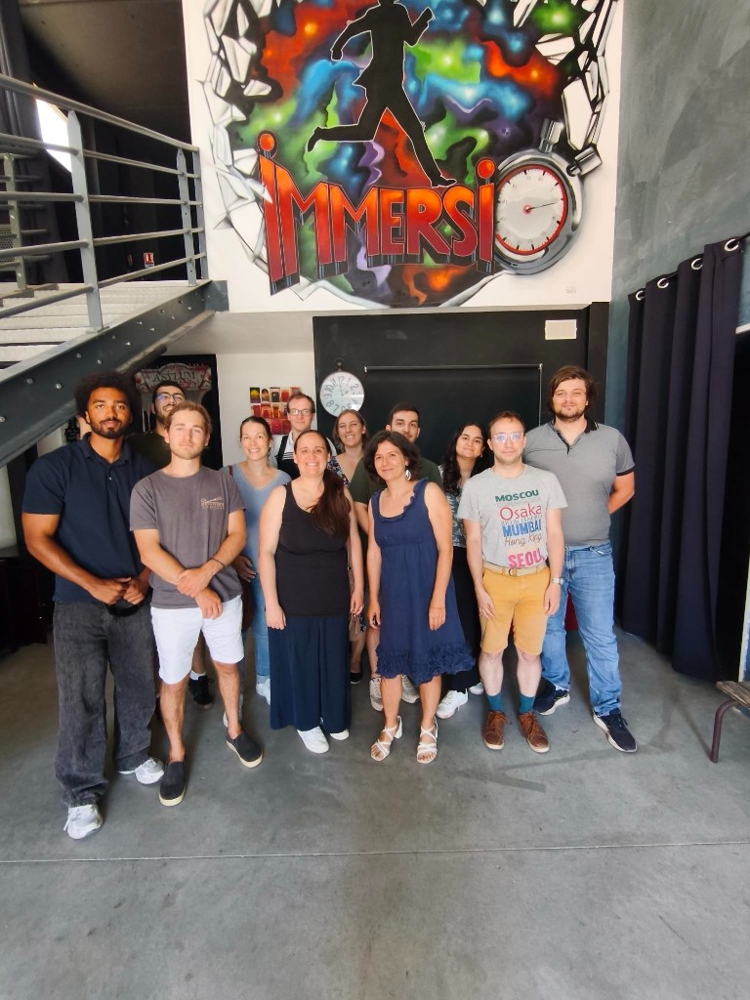

Stilog I.S.T. · Safran
Ingénieur développement
logiciel scientifique
Software engineer
scientific computing
Février 2024 — septembre 2026 · La Ciotat. Projet principal Safran : logiciel de mise en donnée aérodynamique pour phénomènes aérothermiques et dimensionnement de turbomachines.
February 2024 — September 2026 · La Ciotat. Lead Safran work: aerodynamic data-prep software for aerothermal phenomena and turbomachinery sizing.
01 · Mission
01 · Mission
Mise en donnée aérodynamique
Aerodynamic data preparation
Chez Stilog I.S.T., j’ai développé des outils de calcul, de visualisation et de préparation de données pour des ingénieurs Safran. Le projet principal était un logiciel de mise en donnée aérodynamique modélisant les phénomènes aérothermiques : les résultats de calcul servent au dimensionnement des nouvelles turbomachines. J’ai aussi livré des modules sur d’autres chantiers — files de calcul, lissage de courbes, édition de coupes et fatigue sur aubages.
At Stilog I.S.T. I built computation, visualization, and data-prep tools for Safran engineers. The main project was aerodynamic data-prep software modeling aerothermal phenomena: calculation outputs feed sizing of new turbomachinery. I also shipped modules on other workstreams — job queues, curve smoothing, section editing, and blade fatigue analysis.
Je ne peux pas entrer davantage dans le détail sur cette page : la confidentialité client m’y oblige.
I can’t go into further detail on this page — client confidentiality applies.
02 · Travaux
02 · Work
Fonctionnalités livrées
Shipped capabilities
- Gestionnaire de file pour le lancement de calculs aérodynamiques
- Lissage de courbes — paramétrage Savitzky–Golay et visualisation dynamique
- Éditeur de coupes d’aubes
- Fatigue LCF : durée de vie, marge de sécurité consommée, fluage à 1 % et risque de rupture à partir des maillages d’aubages et des données issues de l’IHM
- Récupération et mise en données des résultats du solveur ONERA — Oracle, stockage
- APIs pour lancer des recherches SQL par batch sur le supercalculateur
- Queue manager for aerodynamic calculation launches
- Curve smoothing — Savitzky–Golay tuning and live visualization
- Blade section editor
- LCF fatigue: life estimate, consumed safety margin, 1% creep and rupture risk from blade meshes and UI-supplied data
- Retrieval and data prep of ONERA solver outputs — Oracle, storage
- APIs to run batch SQL queries on the supercomputer
03 · Équipe
03 · Team
Sortie escape game
Escape game outing

04 · Technique
04 · Tech
Stack
Stack
Python · NumPy · SciPy · Matplotlib · SQL · Oracle · Linux · Bash · Git · VS Code
Environnement Linux · accès supercalculateur pour les campagnes de calcul aérodynamique.
Linux environment · supercomputer access for aerodynamic calculation campaigns.